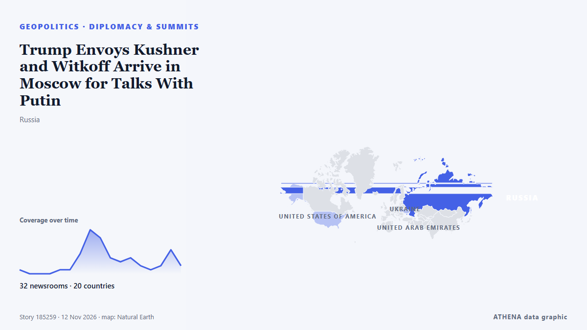

Trump Envoys Kushner and Witkoff Arrive in Moscow for Talks With Putin

Kirill Dmitriev added that peacemakers "will prevail" από TASS (English)
Αναφέρθηκε ανεξάρτητα από 34 μέσα σε 22 χώρες από τις 10 Νοε, πρώτο το TASS (English)· η κάλυψη κορυφώνεται. Το ATHENA εκτιμά τον κίνδυνο αυξημένο (5.8/10), κυρίως λόγω της σοβαρότητάς του και του ρυθμού κάλυψης. Βεβαιότητα 92% (υψηλή): το επιβεβαιώνουν 34 ανεξάρτητα μέσα, μέση αξιοπιστία 75%. Μέσα ανά χώρα: Ρωσία (10), Ουκρανία (6), Ιρλανδία (5). Κάλυψη: 10 Νοε έως 11 Νοε, 24 ώρες.
Γιατί έχει σημασία: Η πλήρους κλίμακας εισβολή της Ρωσίας στην Ουκρανία ξεκίνησε τον Φεβρουάριο του 2022. Η σελίδα παρακολουθεί τις μάχες, τα πλήγματα σε υποδομές και τη διπλωματία γύρω από τον πόλεμο, όπως τα καλύπτουν μέσα από όλο τον κόσμο.
Τι άλλαξε: 55 νέες αναφορές από 33 μέσα στο 24ωρο έως 12 Νοε.
Πρώτη διατύπωση: Russian presidential envoy thanks Kushner, Witkoff for facilitating Trump’s peace effort
Οι τίτλοι των ειδήσεων παρουσιάζονται στα αγγλικά, όπως δημοσιεύτηκαν.
Πώς να διαβάσετε αυτή τη σελίδα
- Τι διαβάζετε
- 34 μέσα σε 22 χώρες ανέφεραν αυτό το γεγονός. Οι αναφορές παρακάτω εμφανίζονται με τη σειρά που δημοσιεύτηκαν· κάθε τίτλος ανοίγει το αρχικό άρθρο. Το ATHENA δεν γράφει δικά του ρεπορτάζ.
- Η εκτίμησή μας
- Υπό παρακολούθηση — Οι αναφορές περιγράφουν ενέργεια ή απόφαση που δεν έχει ακόμη ληφθεί, ανάμεσα σε κράτη ή ένοπλες ομάδες. Το ATHENA παρακολουθεί τι θα συμβεί στη συνέχεια. Αναζητούμε τέσσερα είδη εξέλιξης: καμία περαιτέρω ενέργεια, μια ανοιχτή ενέργεια που κάποιος αναλαμβάνει, μια ενέργεια μέσω τρίτων ή χωρίς ανάληψη ευθύνης, και ένα ατύχημα ή μια παρεξήγηση. Δεν προβλέπουμε ποιο θα συμβεί.
- Πόσα στοιχεία υπάρχουν
- Ισχυρή Πολλά ανεξάρτητα μέσα σε πολλές χώρες περιγράφουν το ίδιο γεγονός.
Αφού αφαιρεθούν οι επαναλήψεις, τα άσχετα και τα παλιά στοιχεία, υπολογίζονται 24 από τις 40 αναφορές που παρατίθενται· το 98% των τίτλων αντιστοιχεί στο γεγονός.
- Τι δεν σημαίνει
- Το ATHENA μετρά πώς καλύπτεται ένα γεγονός, όχι αν είναι αληθές. Δεν είναι πρόβλεψη, κρίση για το ποιος έχει δίκιο ή συμβουλή.
- Τι θα την άλλαζε
- Αναφορές από άλλα ανεξάρτητα μέσα που δείχνουν διαφορετική εξέλιξη, ή σαφής επιβεβαίωση ή διάψευση από επίσημη πηγή.
Εκτίμηση R2 · ανανεώνεται με κάθε ενημέρωση της σελίδας. Το ATHENA δεν έχει δημοσιεύσει ακόμη ιστορικό επιδόσεων για αυτές τις εκτιμήσεις· όταν το κάνει, θα συνδέεται εδώ.
Με μια ματιά
Επιλέγεται, βαθμολογείται και γράφεται από τη δημοσιευμένη μεθοδολογία του ATHENA. Κανένας συντάκτης δεν παρεμβαίνει σε μεμονωμένα γεγονότα. Πώς παράγεται ›
| 10 Nov 21:52 UTC | 1 |
|---|---|
| 10 Nov 23:52 UTC | 0 |
| 11 Nov 01:52 UTC | 0 |
| 11 Nov 03:52 UTC | 0 |
| 11 Nov 05:52 UTC | 1 |
| 11 Nov 07:52 UTC | 1 |
| 11 Nov 09:52 UTC | 5 |
| 11 Nov 11:52 UTC | 11 |
| 11 Nov 13:52 UTC | 9 |
| 11 Nov 15:52 UTC | 4 |
| 11 Nov 17:52 UTC | 3 |
| 11 Nov 19:52 UTC | 4 |
| 11 Nov 21:52 UTC | 2 |
| 11 Nov 23:52 UTC | 1 |
| 12 Nov 01:52 UTC | 2 |
| 12 Nov 03:52 UTC | 7 |
| 12 Nov 05:52 UTC | 6 |
| 10 Nov 21:57 UTC | 0.0 |
|---|---|
| 11 Nov 14:17 UTC | 2.1 |
| 11 Nov 15:02 UTC | 4.1 |
| 11 Nov 20:32 UTC | 5.1 |
| 12 Nov 02:48 UTC | 5.8 |
| 12 Nov 07:29 UTC | 5.8 |
Γιατί αυτοί οι αριθμοί
Σημασία
Κίνδυνος
Βεβαιότητα
Η κάλυψη — ποιος το ανέφερε και πότε
ο τίτλος όπως δημοσιεύτηκε · ανοίγει το πρωτότυπο- TASS (English) · ΡωσίαRussian presidential envoy thanks Kushner, Witkoff for facilitating Trump’s peace effort
- BelTA (English) — page reader · ΛευκορωσίαLukashenko holds talks with Putin
- Al Jazeera English · ΚατάρPutin is not ready to make peace in Abu Dhabi
- TASS (English) · ΡωσίαPutin receiving regular updates from Russian delegation on Abu Dhabi talks — Kremlin
- TASS (English) · ΡωσίαPutin, Lukashenko discussed Abu Dhabi talks at yesterday’s meeting, Kremlin says
- RFE/RL (English) · INTUS Envoys To Meet Putin And Zelenskyy Following Abu Dhabi Talks
- The Straits Times · ΣιγκαπούρηUS envoys Witkoff and Kushner may visit Russia in coming days, TASS reports
- APA (English) · ΑζερμπαϊτζάνUkrainian delegation member: Date of next Russia-Ukraine talks could be set after Witkoff and Kushner's visits
- TASS (English) · ΡωσίαRussia thanks US envoys for helping facilitate talks on Ukraine settlement in Abu Dhabi
- Le Monde (English) · ΓαλλίαUS envoys to meet Putin, Zelensky after Ukraine talks in Abu Dhabi
- News of Bahrain · ΜπαχρέινRussia, Ukraine Begin Second Day of US-Led Peace Talks
- APA (English) · ΑζερμπαϊτζάνKremlin confirms Witkoff and Kushner will visit Moscow
- Oman Observer · ΟμάνUS envoys to meet Putin after Ukraine talks
- TASS (English) · ΡωσίαPutin to hold talks with US envoys Witkoff, Kushner soon — Kremlin aide
- Ukrainska Pravda (English) · ΟυκρανίαUS special envoys Kushner and Witkoff plan meetings with Putin in Moscow and Zelenskyy in Dublin
- RTÉ News · ΙρλανδίαZelensky thanks Ireland for 'unwavering support'
- TASS (English) · ΡωσίαUS envoys to visit Moscow on November 12
- TRT World · ΤουρκίαUS envoys to meet Putin, Zelenskyy after 'good momentum' in Abu Dhabi talks
- Egypt Independent · ΑίγυπτοςTrump envoys to meet Putin in Moscow after latest Ukraine talks end with no breakthrough
- TASS (English) · ΡωσίαPutin to determine next steps after US envoys brief him on Abu Dhabi talks — Lavrov
- The Guardian · Ηνωμένο ΒασίλειοUS envoys to meet Putin and Zelenskyy separately - as it happened
- TASS (English) · ΡωσίαIN BRIEF: What to know about Witkoff and Kushner coming to Moscow
- Kyiv Post · ΟυκρανίαWitkoff, Kushner to Meet Putin in Moscow After Abu Dhabi Talks
- Irish Examiner · ΙρλανδίαTrump envoys to meet Zelenskyy in Dublin for Ukraine talks during major summit
- TheJournal.ie · ΙρλανδίαZelenskyy meets Taoiseach in Dublin ahead of sit-down with US envoys Witkoff and Kushner tomorrow
- Meduza (English) · Ρωσία‘They’re bringing something’: Kushner and Witkoff to meet Putin in Moscow day after Abu Dhabi peace talks
- Arab News · Σαουδική ΑραβίαUS envoys to meet Putin, Zelensky after war talks in Abu Dhabi
- Euractiv · ΒέλγιοUS envoys to meet Putin, Zelenskyy after war talks in Abu Dhabi
- AzerNews · ΑζερμπαϊτζάνUS envoys to meet with Putin, Zelensky after talks
- The Guardian · Ηνωμένο ΒασίλειοUkraine talks in Abu Dhabi bring progress on prisoners but not on peace
- Irish Mirror · ΙρλανδίαUkrainian President Volodymyr Zelenskyy lands in Dublin set to meet US envoys here to discuss peace talks
- Ukrainska Pravda (English) · ΟυκρανίαKremlin says Putin will meet Witkoff and Kushner on 12 November
- Kyiv Independent · ΟυκρανίαZelensky arrives in Dublin for European Political Community summit, expects a debrief from Witkoff, Kushner
- Irish Independent · ΙρλανδίαZelensky says he ‘expects answers’ from US envoys in Dublin after meeting with Taoiseach
- Ukrainska Pravda (English) · ΟυκρανίαZelenskyy outlines expectations for meeting with Trump's envoys following their visit to Putin
- Kyiv Post · ΟυκρανίαZelensky Arrives in Dublin for European Summit Ahead of Talks With US Envoys
- Dawn · ΠακιστάνUS envoys to meet Putin, Zelensky after Russia-Ukraine war talks in Abu Dhabi
- Forbes Business · Ηνωμένες ΠολιτείεςKushner And Witkoff Just Wrapped Two Days Of Russia-Ukraine Peace Talks—What Comes Next?
- TASS (English) · ΡωσίαPutin to meet with US envoys Witkoff, Kushner today
- Times of India · ΙνδίαTrump's envoys to meet Putin in Moscow before talks with Zelenskyy in Ireland